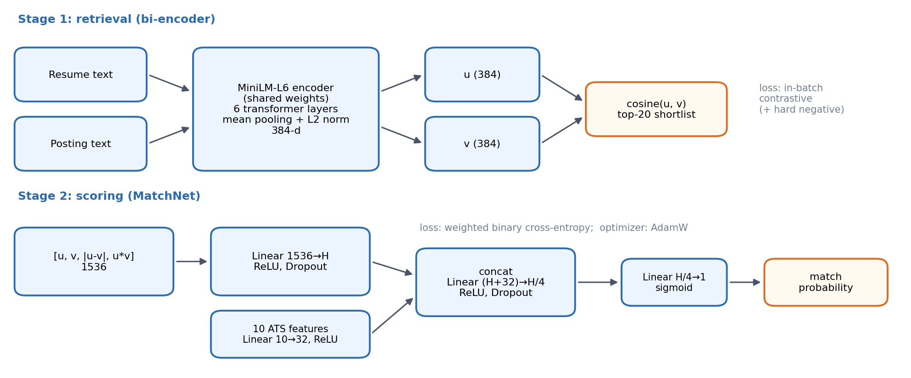
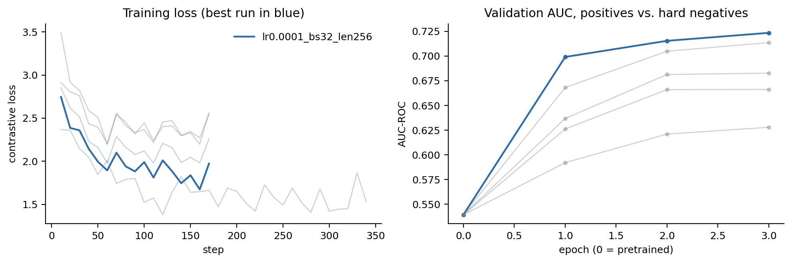
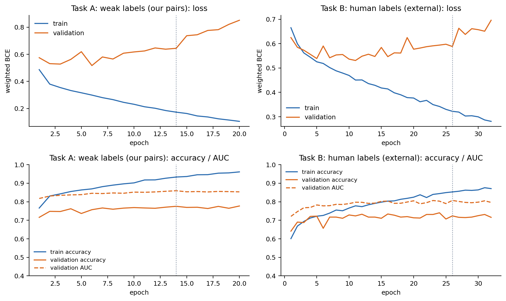
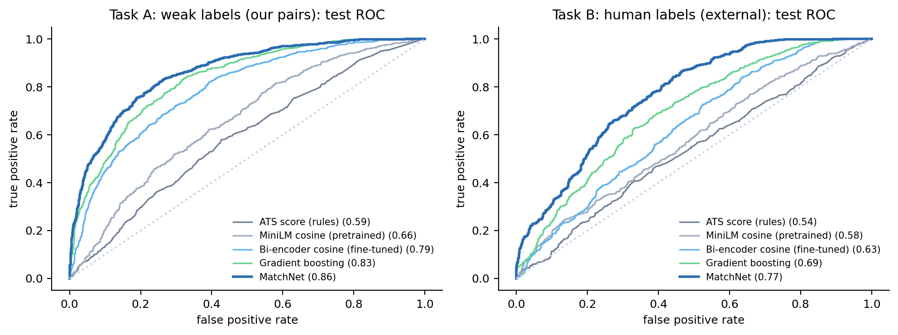
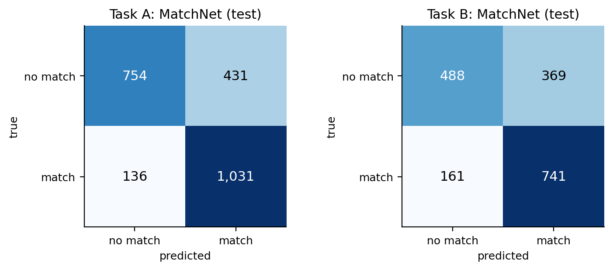
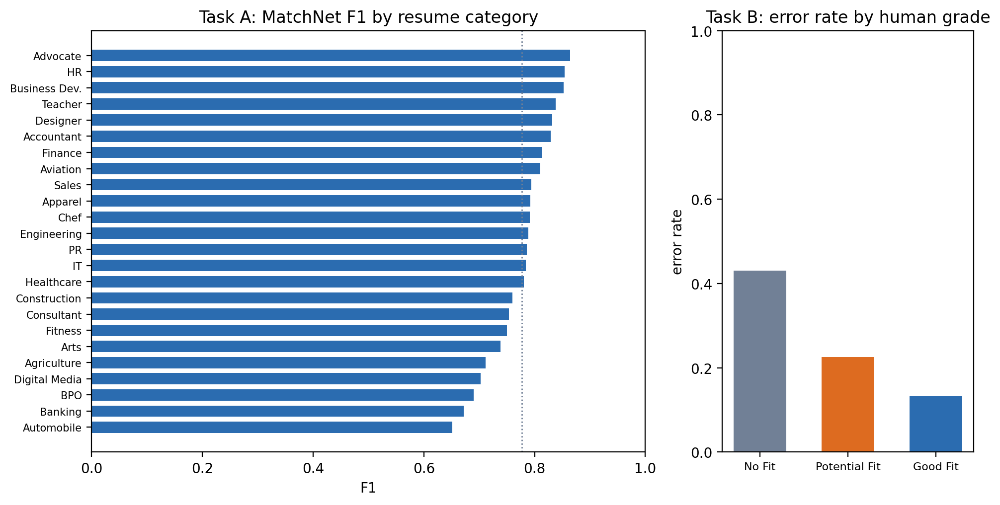
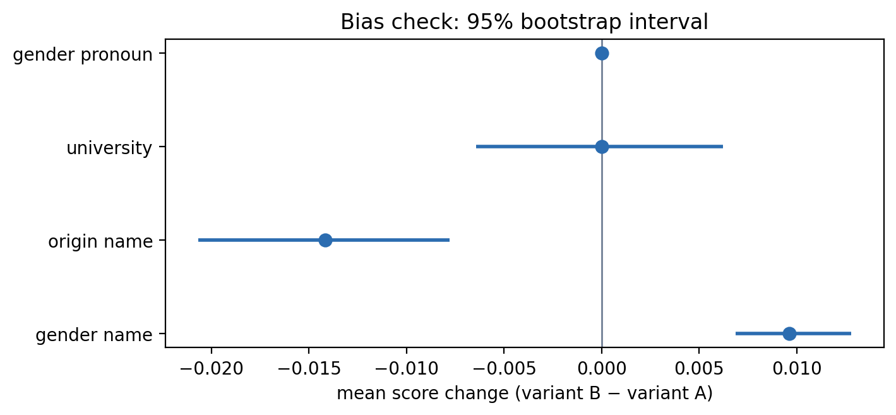

| Member | Roll No. / Section |
|---|---|
| Muhammad Sufyan | 24L-2601 / BSDS-5B |
| Muaaz Fahad | 24L-2563 / BSDS-5B |
| Hanan Ishaque | 24L-2537 / BSDS-5B |
Deliverable 1 defined the problem (a job seeker uploads a resume and receives the three best open postings, each with an apply link and an ATS-style score), collected and cleaned 2,632 resumes and 28,088 postings, and built a rule-based ATS score and 15,755 labelled resume–posting pairs. This deliverable covers Phases 3 and 4: it trains the matching models, tunes them, and evaluates them on held-out data, including an error analysis and a bias check.
Two models are trained, both in PyTorch:
Both are compared with five baselines (the rule-based ATS score, TF-IDF cosine, the pretrained encoder, logistic regression and gradient boosting, the last two from scikit-learn).
Two evaluation tasks. Our own pairs from Deliverable 1 are weakly labelled: a
pair is positive when the resume and posting share an occupation category. A model can score well
on them by recognizing occupations, which is necessary but not sufficient for a good match. We
therefore also evaluate on an external, human-labelled dataset
(cnamuangtoun/resume-job-description-fit), where human annotators labelled 8,000 pairs as
No Fit, Potential Fit or Good Fit. Task A (weak labels) measures occupation-level matching on our
own data; Task B (human labels) measures whether the model agrees with human judgement of fit
within and across occupations, and is the harder and more meaningful test.

The two-stage design follows the product requirement. Ranking thousands of postings with a model that reads both documents jointly would be slow, so stage 1 uses independent embeddings that can be pre-computed for every posting. Stage 2 only sees 20 candidates and can afford richer inputs, including the explicit skill and experience features that make the result explainable to the user. Table 1 lists the frameworks used.
| Component | Implementation |
|---|---|
| Bi-encoder | PyTorch 2.8 training loop around sentence-transformers (MiniLM-L6), src/models/bi_encoder.py |
| MatchNet | PyTorch nn.Module, src/models/matchnet.py |
| Baselines | scikit-learn 1.6 (LogisticRegression, HistGradientBoostingClassifier, TF-IDF) |
| Metrics | scikit-learn metrics with bootstrap confidence intervals, src/evaluate.py |
| Hardware | Apple M1 Pro (16 GB), PyTorch MPS backend; seed 42 everywhere |
Layers. all-MiniLM-L6-v2: a 6-layer transformer (hidden size 384, 12 attention
heads, 22.7M parameters), inputs truncated to 256 word pieces, followed by mean pooling over
tokens and L2 normalization. Resumes and postings share the same weights.
Loss. Multiple-negatives ranking loss. A batch holds B triplets (resume, matching posting, hard negative posting); hard negatives are postings from a related but different occupation, mined in Deliverable 1. Each resume must pick its own posting among all 2B postings in the batch, so the other resumes' positives act as additional negatives: L = CrossEntropy(s · cos(ri, pj), i) with scale s = 20. This uses every posting in the batch as a negative at no extra cost and directly optimizes ranking, which is what stage 1 is for.
Optimizer. AdamW (weight decay 0.01), linear warm-up over the first 10% of steps then linear decay to zero, gradient-norm clipping at 1.0, gradient checkpointing to fit the 16 GB machine. Each epoch draws one triplet per training resume (1,842 triplets), cycling through that resume's positives and hard negatives across epochs.
Layers. For resume embedding u and posting embedding v (384-d each, from the fine-tuned bi-encoder) MatchNet builds the standard interaction vector [u, v, |u−v|, u ⊙ v] (1,536 values) and passes it through
The selected models have H = 256 (Task A, 412,385 parameters) and H = 128 (Task B, 202,273 parameters).
Loss. Binary cross-entropy on the logit (BCEWithLogitsLoss) with
pos_weight = negatives / positives in the training split, so that both classes contribute
equally to the gradient despite the class imbalance.
Optimizer. AdamW (weight decay 10−4), at most 60 epochs, early stopping when validation AUC-ROC has not improved for 6 epochs; the weights of the best epoch are restored.
All tuning uses the validation split only; the test split is touched once, for the final numbers.
Bi-encoder. Fine-tuning a transformer is expensive (about 3 minutes per epoch here), so instead of a full grid we varied one parameter at a time around the usual sentence-transformer defaults (learning rate 3×10−5, batch 32, length 256): learning rate (three values a factor of three apart), batch size (which also sets the number of in-batch negatives) and maximum input length, each for 3 epochs, 5 runs in total (Table 2). The selection criterion is the AUC of positives against hard negatives, because separating related occupations is the difficult part; random negatives are already easy for the pretrained model.
| Learning rate | Batch | Max len | Best ep. | Val AUC | Val AUC (hard) | Val P@3 | Min |
|---|---|---|---|---|---|---|---|
| pretrained MiniLM, no fine-tuning | 0.644 | 0.539 | 0.429 | – | |||
| 1×10−5 | 32 | 256 | 3 | 0.729 | 0.628 | 0.544 | 8 |
| 3×10−5 | 32 | 256 | 3 | 0.771 | 0.683 | 0.609 | 8 |
| 1×10−4 | 32 | 256 | 3 | 0.801 | 0.724 | 0.631 | 8 |
| 3×10−5 | 16 | 256 | 3 | 0.793 | 0.714 | 0.629 | 9 |
| 3×10−5 | 32 | 128 | 3 | 0.751 | 0.666 | 0.579 | 3 |
The selected configuration (learning rate 1×10−4, batch 32, length 256, epoch 3) raised validation AUC on hard negatives from 0.539 to 0.724 and precision@3 from 0.429 to 0.631. Three observations justify the choice:
Every run was still improving at its last epoch, so longer training (and combining 10−4 with batch 16) is the obvious next step; it was limited by compute, not by overfitting.
MatchNet. MatchNet trains in seconds, so we ran a full grid of 36 combinations per task: learning rate 10−3, 3×10−4, 10−4, batch size 64, 256, dropout 0.1, 0.3, 0.5 and hidden size 128, 256. Table 3 summarizes the effect of each value; the full grid is in Section 16.
| Hyperparameter | Value | Task A: mean / max val AUC | Task B: mean / max val AUC |
|---|---|---|---|
| Learning rate | 1×10−4 | 0.835 / 0.839 | 0.773 / 0.781 |
| 3×10−4 | 0.841 / 0.847 | 0.781 / 0.793 | |
| 1×10−3 | 0.853 / 0.860 | 0.794 / 0.807 | |
| Batch size | 64 | 0.845 / 0.860 | 0.787 / 0.807 |
| 256 | 0.840 / 0.857 | 0.779 / 0.800 | |
| Dropout | 0.1 | 0.841 / 0.858 | 0.780 / 0.795 |
| 0.3 | 0.843 / 0.860 | 0.781 / 0.807 | |
| 0.5 | 0.845 / 0.858 | 0.788 / 0.807 | |
| Hidden size H | 128 | 0.842 / 0.855 | 0.784 / 0.807 |
| 256 | 0.844 / 0.860 | 0.782 / 0.806 |
Selected: Task A learning rate 1×10−3, batch 64, dropout 0.3, H = 256 (val AUC 0.860, best epoch 14); Task B learning rate 1×10−3, batch 64, dropout 0.5, H = 128 (val AUC 0.807, best epoch 26). The largest learning rate won on both tasks: with early stopping on validation AUC, a fast optimizer is not at risk of overfitting, and the network is small. Task B has only 5,463 training pairs, about half of Task A, which is why the smaller network with the strongest dropout was selected there. Batch size mattered little.
Ablations. Two questions were checked on the validation split with the selected configuration. Does fine-tuning the encoder help MatchNet? With pretrained instead of fine-tuned embeddings, validation AUC is 0.783 (Task A) and 0.820 (Task B), against 0.860 and 0.807. Do the explicit ATS features help? Without the feature branch it is 0.834 (Task A) and 0.800 (Task B), so the interpretable features add a small but consistent gain on top of the embeddings. Fine-tuning helps strongly on Task A but not on Task B, where pretrained embeddings are slightly better. The bi-encoder was fine-tuned on Task A's occupation labels; it learned to separate occupations, which matters less when most Task B pairs already share an occupation and differ in seniority and specific skills. We keep one encoder for both tasks because the product uses one, and report this as a limitation.


Validation loss starts rising after a few epochs while validation AUC is still flat or improving: the network keeps ranking pairs correctly but becomes over-confident on the pairs it gets wrong, which cross-entropy punishes heavily. This is why early stopping monitors AUC, the quantity the product depends on (ranking), rather than loss; the train–validation gap in accuracy also shows that dropout and early stopping are needed, since MatchNet can fit the training pairs almost perfectly.
We use a fixed train / validation / test split rather than K-fold cross-validation. Fine-tuning the transformer five or ten times per configuration would multiply a one-hour search, and with thousands of pairs a single held-out split already gives tight confidence intervals (reported below). The splits are made by entity, not by pair, so that no information leaks:
GroupShuffleSplit), so validation also
measures generalization to unseen postings.The decision threshold of every model is chosen on the validation split (maximum F1) and applied unchanged to the test split. 95% confidence intervals come from 1,000 bootstrap resamples of the test pairs.
Both test splits happen to be close to balanced (50% and 51% positive), but only by construction: in the product, almost every posting is a non-match for a given resume, so the deployed problem is heavily imbalanced. Accuracy rewards predicting the majority class and would look good on the deployed problem even for a useless model, so it is reported only for completeness. We report:
For the product itself we also report precision@3: the share of the three recommended postings that are relevant.
| Model | Precision | Recall | F1 | Accuracy | AUC-ROC [95% CI] | PR-AUC |
|---|---|---|---|---|---|---|
| ATS score (rules) | 0.498 | 0.997 | 0.665 | 0.500 | 0.588 [0.56, 0.61] | 0.563 |
| TF-IDF cosine | 0.552 | 0.973 | 0.704 | 0.594 | 0.571 [0.55, 0.59] | 0.555 |
| MiniLM cosine (pretrained) | 0.540 | 0.939 | 0.686 | 0.574 | 0.661 [0.64, 0.68] | 0.622 |
| Bi-encoder cosine (fine-tuned) | 0.639 | 0.876 | 0.739 | 0.694 | 0.790 [0.77, 0.81] | 0.770 |
| Logistic regression | 0.659 | 0.864 | 0.748 | 0.711 | 0.808 [0.79, 0.82] | 0.791 |
| Gradient boosting | 0.724 | 0.810 | 0.764 | 0.752 | 0.832 [0.82, 0.85] | 0.818 |
| MatchNet | 0.705 | 0.883 | 0.784 | 0.759 | 0.862 [0.85, 0.88] | 0.855 |
| Model | Precision | Recall | F1 | Accuracy | AUC-ROC [95% CI] | PR-AUC |
|---|---|---|---|---|---|---|
| ATS score (rules) | 0.514 | 0.997 | 0.678 | 0.516 | 0.536 [0.51, 0.56] | 0.544 |
| TF-IDF cosine | 0.574 | 0.784 | 0.663 | 0.591 | 0.612 [0.58, 0.64] | 0.582 |
| MiniLM cosine (pretrained) | 0.537 | 0.876 | 0.666 | 0.550 | 0.579 [0.55, 0.61] | 0.592 |
| Bi-encoder cosine (fine-tuned) | 0.571 | 0.887 | 0.695 | 0.601 | 0.633 [0.61, 0.66] | 0.607 |
| Logistic regression | 0.563 | 0.897 | 0.692 | 0.590 | 0.648 [0.62, 0.67] | 0.622 |
| Gradient boosting | 0.594 | 0.876 | 0.708 | 0.630 | 0.695 [0.67, 0.72] | 0.679 |
| MatchNet | 0.668 | 0.822 | 0.737 | 0.699 | 0.768 [0.74, 0.79] | 0.757 |
Task A. MatchNet reaches F1 0.784 and AUC-ROC 0.862 (95% CI 0.85–0.88) on 2,352 test pairs, against 0.588 for the rule-based ATS score, 0.661 for the pretrained encoder and 0.790 for the fine-tuned bi-encoder alone. Accuracy by pair type: 0.883 on positives, 0.889 on random negatives, but only 0.510 on hard negatives. Almost all remaining errors are postings from a related occupation that the model accepts; this is the main weakness and the focus of the error analysis.
Task B. On human labels MatchNet reaches F1 0.737 (precision 0.668, recall 0.822) and AUC-ROC 0.768 (95% CI 0.74–0.79), against 0.536 for the ATS score and 0.579 for the pretrained encoder. Its mean score rises with the human grade: 0.344 for No Fit, 0.634 for Potential Fit and 0.687 for Good Fit; separating Good from No Fit alone gives AUC 0.788. The model therefore separates No Fit from the rest well but barely distinguishes Potential from Good Fit. The rule-based ATS score is close to chance on both tasks (AUC 0.588 and 0.536): it accepts nearly everything (recall above 0.99), which shows why a learned model is needed. Gradient boosting on the same features is the strongest baseline; MatchNet beats it on every threshold-free metric.


Top-3 recommendation. Table 6 evaluates the product flow end to end: for each test resume, all test postings are ranked and the top three are checked.
| Ranker | Precision@3 |
|---|---|
| TF-IDF cosine | 0.406 |
| MiniLM (pretrained) | 0.417 |
| Bi-encoder (fine-tuned) | 0.634 |
| Bi-encoder + MatchNet re-rank | 0.641 |
| Random ranking (expected) | 0.050 |
Fine-tuning lifts precision@3 from 0.417 (pretrained) to 0.634, so roughly two of the three recommended postings are in the right occupation, against one in twenty for a random ranking (0.050). Re-ranking the top 20 with MatchNet adds only a little (0.641) on this occupation-level criterion; its value is in a match score that also weighs skills and experience, and in the explicit skill features shown to the user. The weakest occupations are Agriculture (0.00), Automobile (0.00), BPO (0.08); the strongest are Chef (1.00), HR (0.98), Accountant (0.96).
Owner: Muaaz Fahad, module src/error_analysis.py.
The errors are not spread evenly. Hard negatives (postings from a related occupation) are wrong almost half the time (0.490), while positives and random negatives sit around 0.117 and 0.111. That is the product failure we care about: recommending a nearby but wrong role.
False positives look like matches on paper: title match (0.55 vs. 0.36) and skill coverage (0.20 vs. 0.13) relative to true negatives, so lexical overlap is treated as evidence of a match even when the occupation is wrong. The most confident false positives include an aviation resume scored 0.999 against an accountant posting and a fitness resume against a teacher posting. False negatives (same occupation, rejected) have slightly lower skill coverage (0.14 vs. 0.19) and title match (0.55 vs. 0.59) than true positives; several chef, designer and finance pairs are scored near 0 despite matching categories, so the model can also be over-confident the other way.
On human labels the error rate falls as the grade improves: 0.431 of No Fit pairs are accepted, 0.225 of Potential Fit and 0.133 of Good Fit are rejected. Potential Fit is the ambiguous middle and the main source of Task B mistakes.

| Resume category | Precision | Recall | F1 | Pairs |
|---|---|---|---|---|
| Automobile | 0.560 | 0.778 | 0.651 | 36 |
| Banking | 0.600 | 0.765 | 0.672 | 102 |
| BPO | 0.588 | 0.833 | 0.690 | 24 |
| Digital Media | 0.565 | 0.929 | 0.703 | 84 |
| Agriculture | 0.656 | 0.778 | 0.712 | 54 |
| Arts | 0.651 | 0.854 | 0.739 | 96 |
| Fitness | 0.635 | 0.917 | 0.750 | 90 |
| Consultant | 0.671 | 0.860 | 0.754 | 114 |
| Construction | 0.687 | 0.852 | 0.760 | 108 |
| Healthcare | 0.667 | 0.941 | 0.780 | 102 |
| IT | 0.669 | 0.948 | 0.784 | 192 |
| PR | 0.688 | 0.917 | 0.786 | 96 |
| Engineering | 0.659 | 0.983 | 0.789 | 114 |
| Chef | 0.844 | 0.745 | 0.792 | 102 |
| Apparel | 0.689 | 0.933 | 0.792 | 90 |
| Sales | 0.694 | 0.926 | 0.794 | 108 |
| Aviation | 0.723 | 0.922 | 0.810 | 102 |
| Finance | 0.780 | 0.852 | 0.814 | 108 |
| Accountant | 0.767 | 0.902 | 0.829 | 102 |
| Designer | 0.902 | 0.771 | 0.832 | 96 |
| Teacher | 0.772 | 0.917 | 0.838 | 96 |
| Business Dev. | 0.845 | 0.860 | 0.852 | 114 |
| HR | 0.839 | 0.870 | 0.855 | 108 |
| Advocate | 0.794 | 0.947 | 0.864 | 114 |
Owner: Hanan Ishaque, module src/bias_check.py.
A matcher must not change its decision because of who the candidate is. We test this counterfactually: for 300 test pairs we create resume variants that differ in one attribute only and measure how much the MatchNet score moves. The resumes were anonymized in Deliverable 1, so the attribute is re-inserted explicitly:
Several name pairs are averaged per test. For each test we report the mean paired score difference with a bootstrap 95% interval, a Wilcoxon signed-rank test, and the share of pairs whose accept/reject decision flips at the MatchNet threshold (Table 8).
| Counterfactual test | Mean Δ | 95% CI | Mean |Δ| | p | Decisions flipped |
|---|---|---|---|---|---|
| gender name | +0.0096 | [+0.0069, +0.0128] | 0.0149 | <0.001 | 0.7% |
| origin name | -0.0142 | [-0.0207, -0.0078] | 0.0274 | <0.001 | 1.7% |
| university | +0.0000 | [-0.0064, +0.0062] | 0.0250 | 0.765 | 1.3% |
| gender pronoun | +0.0000 | [-0.0000, +0.0001] | 0.0001 | 0.086 | 0.0% |

Conclusion: At most 1.7% of accept/reject decisions flip when gender, origin or university is swapped, and every mean score shift is below 0.02. Female names score slightly higher than male names (+0.010) and Western names slightly lower than Pakistani names (-0.014); both shifts are statistically detectable on 300 pairs but too small to change the ranking a user would see. University prestige and pronouns have no measurable effect.
make refresh) before a demo.Code is in src/ (models in src/models/), dependencies in requirements.txt.
Weights are not stored in Git. make weights downloads them from
https://huggingface.co/Suf7/resumatch-models
or the GitHub Release tagged deliverable2-weights,
or they can be rebuilt from scratch with:
make train — bi-encoder grid search, pair matrices, MatchNet grid search;make evaluate — test metrics, top-3 retrieval, figures, report tables;make report2 — this PDF.Table 9 is generated from git log, so it reflects the commit history exactly.
| Git author | Commits | Lines | Main modules (by lines changed) |
|---|---|---|---|
| Muhammad Sufyan | 9 | +5,148 / −96 | report (build_pdf.py), build_features.py, scrape_jobs.py, report (make_tables.py), common.py |
| Muaaz Fahad | 0 | +0 / −0 | — |
| Hanan Ishaque | 0 | +0 / −0 | — |
report/contributions.py (generated files such as figures, PDFs and JSON statistics are excluded).| Member | Deliverable 2 responsibility |
|---|---|
| Muhammad Sufyan | Bi-encoder and MatchNet implementation, training and tuning, baselines, evaluation, retrieval evaluation, figures, report |
| Muaaz Fahad | Error analysis (src/error_analysis.py), Section 11 |
| Hanan Ishaque | Bias check (src/bias_check.py), Section 12 |
| LR | Batch | Dropout | H | A: val AUC | A: epoch | B: val AUC | B: epoch |
|---|---|---|---|---|---|---|---|
| 1×10−3 | 64 | 0.1 | 128 | 0.852 | 14 | 0.793 | 20 |
| 1×10−3 | 64 | 0.1 | 256 | 0.858 | 14 | 0.795 | 14 |
| 1×10−3 | 64 | 0.3 | 128 | 0.851 | 16 | 0.807 | 23 |
| 1×10−3 | 64 | 0.3 | 256 | 0.860 | 14 | 0.796 | 11 |
| 1×10−3 | 64 | 0.5 | 128 | 0.855 | 23 | 0.807 | 26 |
| 1×10−3 | 64 | 0.5 | 256 | 0.858 | 14 | 0.806 | 14 |
| 1×10−3 | 256 | 0.1 | 128 | 0.847 | 29 | 0.782 | 11 |
| 1×10−3 | 256 | 0.1 | 256 | 0.846 | 30 | 0.780 | 9 |
| 1×10−3 | 256 | 0.3 | 128 | 0.847 | 31 | 0.786 | 18 |
| 1×10−3 | 256 | 0.3 | 256 | 0.853 | 31 | 0.789 | 16 |
| 1×10−3 | 256 | 0.5 | 128 | 0.850 | 31 | 0.800 | 26 |
| 1×10−3 | 256 | 0.5 | 256 | 0.857 | 38 | 0.793 | 16 |
| 3×10−4 | 64 | 0.1 | 128 | 0.841 | 31 | 0.785 | 16 |
| 3×10−4 | 64 | 0.1 | 256 | 0.843 | 31 | 0.779 | 16 |
| 3×10−4 | 64 | 0.3 | 128 | 0.841 | 27 | 0.783 | 23 |
| 3×10−4 | 64 | 0.3 | 256 | 0.845 | 31 | 0.778 | 16 |
| 3×10−4 | 64 | 0.5 | 128 | 0.844 | 31 | 0.793 | 34 |
| 3×10−4 | 64 | 0.5 | 256 | 0.847 | 36 | 0.787 | 16 |
| 3×10−4 | 256 | 0.1 | 128 | 0.836 | 59 | 0.778 | 20 |
| 3×10−4 | 256 | 0.1 | 256 | 0.837 | 46 | 0.770 | 20 |
| 3×10−4 | 256 | 0.3 | 128 | 0.839 | 40 | 0.772 | 32 |
| 3×10−4 | 256 | 0.3 | 256 | 0.838 | 37 | 0.771 | 26 |
| 3×10−4 | 256 | 0.5 | 128 | 0.841 | 59 | 0.786 | 50 |
| 3×10−4 | 256 | 0.5 | 256 | 0.840 | 38 | 0.784 | 44 |
| 1×10−4 | 64 | 0.1 | 128 | 0.836 | 58 | 0.776 | 31 |
| 1×10−4 | 64 | 0.1 | 256 | 0.836 | 51 | 0.773 | 20 |
| 1×10−4 | 64 | 0.3 | 128 | 0.836 | 51 | 0.772 | 34 |
| 1×10−4 | 64 | 0.3 | 256 | 0.837 | 40 | 0.773 | 25 |
| 1×10−4 | 64 | 0.5 | 128 | 0.839 | 59 | 0.774 | 35 |
| 1×10−4 | 64 | 0.5 | 256 | 0.838 | 40 | 0.781 | 52 |
| 1×10−4 | 256 | 0.1 | 128 | 0.831 | 59 | 0.777 | 51 |
| 1×10−4 | 256 | 0.1 | 256 | 0.831 | 59 | 0.773 | 38 |
| 1×10−4 | 256 | 0.3 | 128 | 0.832 | 60 | 0.771 | 55 |
| 1×10−4 | 256 | 0.3 | 256 | 0.833 | 59 | 0.771 | 38 |
| 1×10−4 | 256 | 0.5 | 128 | 0.833 | 60 | 0.767 | 59 |
| 1×10−4 | 256 | 0.5 | 256 | 0.835 | 59 | 0.774 | 51 |